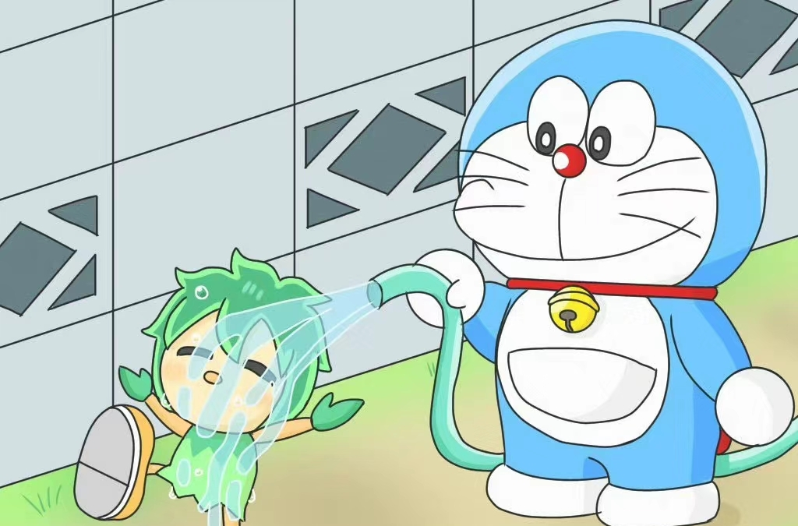
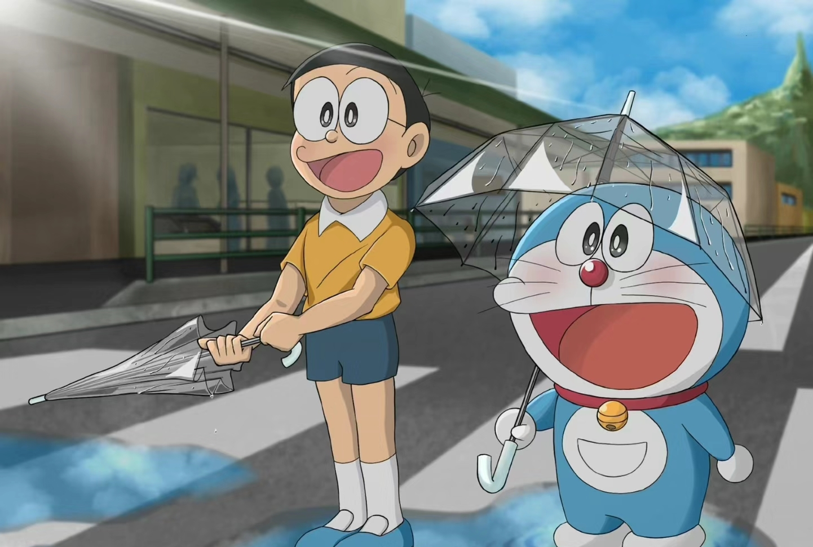

哆啦A梦（ドラえもん）名字的意思是铜锣卫门。心肠好，乐于助人，做事很拼命，但却心肠软。每次大雄遇到困难，他总会帮大雄。但有时会用愚蠢的方法来帮助大雄。当它吃不到铜锣烧或人们叫他狸猫时，脾气会非常暴躁。 他原来是和妹妹一样，黄色的，而且有耳朵，一天，小世修为了感谢哆啦A梦照顾他，做了一个哆啦A梦的泥娃娃，可就是耳朵老做不好，就用未来世界的工具老鼠机器人修改泥娃娃，可是小世下错了指令，那个老鼠机器人就把哆啦A梦的耳朵咬坏了，他要喝一种药振作精神，可他拿错了药，是让人大哭不止的药，结果他哭了三天三夜，嗓子也哭沙哑了

单纯天真的个乐天派，成天吊儿郎当地混日子。性格懒惰，天生迟钝，什么时候都慢半拍，迟到纪录和罚站纪录等等屡次创造新纪录。是个倒霉蛋。学习成绩很糟糕(平时考试5次中就有1次得零分，偶尔得过一次100分，每次都是倒数第二名)，运动神经迟钝(却是射击和翻花绳的天才)，做任何事情都毛手毛脚的，智力和体力只有小学二年级的水平(注哆啦A梦学年制连载，人物年龄画风设定有点变化，动画却统一年龄画风)性格懦弱，胆子很小，经常受人欺负，遇到问题只知道逃避。 意志力薄弱，没长性，虽然经常下决心，但总是半途而废，决心坚持时间最高纪录是48分23秒。擅长睡觉，只要想睡什么时候都能睡着，睡着仅需要0.93秒。